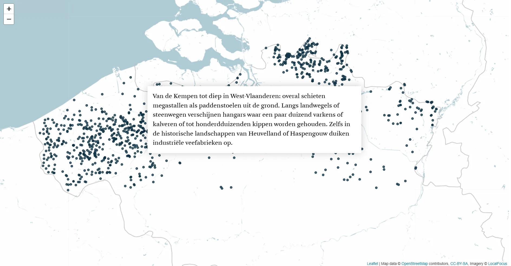
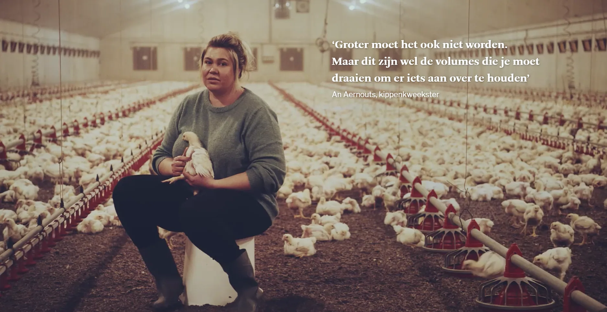

This was the very first longform we made as a team, and the start of a long series.


The story maps the scaling-up of Flemish livestock farming: 42 million chickens, 5.7 million pigs, and mega-farms springing up like mushrooms.
An interactive Leaflet map shows how they are spread from the Kempen deep into West Flanders. Expandable info cards follow the economic chain from feed manufacturer to supermarket. The design had to give Jimmy Kets's atmospheric photography and video all the room they needed. The visuals carry this story.
Made with
Made by
- Ine Renson
- Text
- Jimmy Kets
- Photo & video
- Tina Boeykens
- Design & development
- Andy Stevens
- Design & development